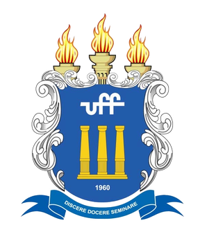

Me formei em 2020 no Colégio Santo Amaro, com aprovação em décimo lugar no ENEM para Ciência da Computação na UFF. No nono ano, ganhei um certificado de menção honrosa da OBMEP (Olimpíada Brasileira de Matemática para Escolas Públicas e Privadas). Além disso, concluí o curso de inglês no FISK em 2018, com certificado do Michigan English Test de nível B2. Atualmente, curso Ciência da Computação na UFF e Análise e Desenvolvimento de Sistemas na UNINTER e realizo alguns cursos online na Udemy.
